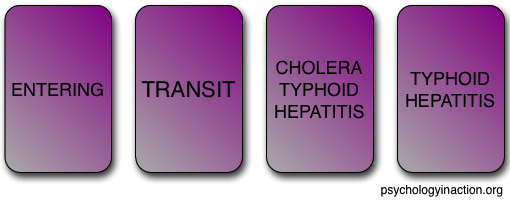
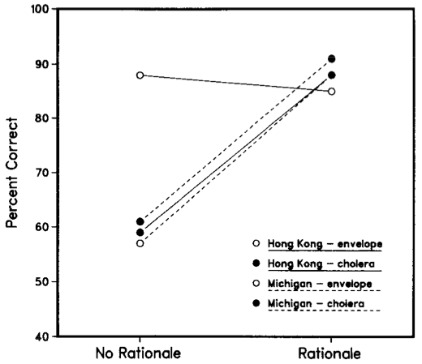
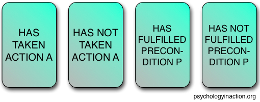
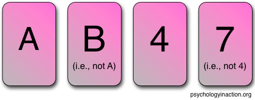

Psychology Classics: Wason Selection Task (Part II)
![]()
This blog post was originally published on the Psychology in Action blog in October 2013.
This post was the second of two on the Wason selection task (Part I), and part of a series exploring classic experiments and theories in the history of psychological research.
In Part I of my series of posts on the Wason selection task, I detailed the development of the task (Wason, 1966), the discovery of the content effect (Wason & Shapiro, 1971), and early explanations for the effect and its failed replications (Griggs & Cox, 1982). We left off with the sentiment that reasoners must be using knowledge that is more abstract than specific memories but more concrete than context-free symbolic logic.
Now we turn to the mid-‘80s, when two popular theories emerged to explain participants’ seemingly incompatible performance on different versions of the selection task: Cheng and Holyoak’s pragmatic reasoning schemas (1985, 1989; Cheng et al., 1986) and Cosmides and Tooby’s social contract theory (Cosmides, 1985; Cosmides, 1989; Cosmides & Tooby, 1992). The broader implications of these competing theories renewed interest among researchers in using the Wason selection task as a means for studying human deductive reasoning, and reflect a more general tension in cognitive science between thinking of the mind as a content-general information processor or a collection of content-specific modules.
Pragmatic reasoning schemas
In the mid-1980s, cognitive psychologists Patricia Cheng and Keith Holyoak proposed a hypothesis that occupies a theoretical middle-ground between the purely semantic memory-cueing theories (Griggs & Cox, 1982; Manktelow & Evans, 1979) and the purely syntactic natural logic theories (Braine, 1978; Osherson, 1975; see Part I). Building off of cognitive psychology research on schematic knowledge and inference, their theory of pragmatic reasoning schemas (Cheng & Holyoak, 1985, 1989; Cheng et al., 1986) claims that humans learn through experience the general structure of scenarios such as requiring permission to carry out a desired action. From this experience, reasoners are able to leverage the context-specific salience of the conditional’s contrapositive form (inferring “the desired action is not to be taken if the permission is not satisfied” from “if the action is to be taken, then the permission must be satisfied”) to bring to bear on relevant domains, even if they are novel. Thus, humans’ general reasoning skills allow for learning from examples and extrapolating to similarly structured situations.
In cognitive psychology, a schema (closely related to a script or frame) is a mental framework for representing patterns of information that are relatively constant across multiple instances of similar contexts. By consolidating specific memories of some like type into a single, more abstract representation, a schema leverages a large amount of explanatory and predictive weight for relatively little cognitive effort. Once you’ve learned a schema, you can use it to identify new instances of the schema and make reliable inferences from prior experiences.
Humans frequently draw from schemas when encountering new examples of a familiar kind––we might assume that a graduate student’s office would contain books (Brewer & Treyens, 1981) or that a waitress in a restaurant would bring menus (Bower, Black, & Turner, 1979). Moreover, when learning new information, we draw on prior knowledge to make sensible inferences (Bransford & Franks, 1971).
Cheng and Holyoak’s account takes this notion of schema and applies it to social situations. They noted that most of the instances of facilitating contrapositive responses in the Wason selection task involved contexts with a broad theme in common––conditional rules describing scenarios of permission or obligation, which fall into the domain of deontic logic. These situations invariably consist of a goal (desired state or action) and a precondition (required state or action). A pragmatic reasoning schema contains sets of context-sensitive rules that are defined relative to an actor’s situational goal, and their relationship to the precondition for carrying out the goal.
For example, in the alcohol problem detailed in Part I, it’s easy to see that the fundamental logic of the drinking rule is that one is required to meet a precondition (being at least 21 years of age) in order to have permission to achieve the goal (consume alcohol). Cheng and Holyoak argue that if the problem context evokes a sense of permission, this cues the permission schema, and reasoners can tap into their general knowledge induced from prior personal experience with permission-based scenarios. In the drinking-rule case, the connection between the problem description and a sense of requiring permission seems relatively straightforward, which makes it very easy to draw on schematic knowledge of permissions.
Production rules
Borrowing from the artificial intelligence terminology for frames (Minsky, 1975), Cheng and Holyoak propose a production system, which takes as arguments the contextual roles of a desired goal and a required precondition (rather than context-free logical symbols P and Q in a purely syntactic theory), as well as the modal concepts of possibility and necessity. When the antecedent of a production rule is satisfied, the consequent is instantiated. By matching isomorphic roles across different scenarios, reasoners can easily apply the schema’s production rules to make appropriate and useful inferences, even for novel situations (so long as the schema is properly cued).
Permission Schema Production Rules (Cheng & Holyoak, 1985, p. 397):
If the action is to be taken, then the precondition must be satisfied.
If the action is not to be taken, then the precondition need not be satisfied.
If the precondition is satisfied, then the action may be taken.
If the precondition is not satisfied, then the action must not be taken.
Comparing these four production rules to the four logical arguments for the material conditional (see Part I), #1 is the original form of the conditional, #2 overrides the Denying the Antecedent fallacy, #3 overrides the Affirming the Consequent fallacy, and #4 is the contrapositive form of the conditional. Notice that all four rules contain modal verbs of necessity or possibility (“must”, “need”, “may”) and specify the roles of both action and precondition. This is the contextualized vocabulary of the permission schema.
In the alcohol example, it’s very easy to substitute “drinking alcohol” for the desired action and “at least 21 years old” as the precondition: “If someone is drinking alcohol, then they must be at least 21 years old.” For problems of permission and obligation (such as the alcohol problem), both the original and contrapositive forms (production rules #1 and #4, respectively) are relevant to the goal of detecting rule violations (anyone drinking alcohol must be 21, and anyone under 21 must not be drinking alcohol). Production rules #2 and #3 aid in avoiding common fallacies (so you don’t think that those not drinking alcohol must be under 21, or that 21-year-olds must be drinking alcohol). In the alcohol version of the Wason selection task (Problem 2 in Part I), rules #1 and #4 require us to turn over the cards with BEER and 19, respectively, whereas rules #2 and #3 allow us to ignore the cards with COKE and 35, respectively.
While the contrapositive #4 is clearly useful in deontic contexts like alcohol regulations, Cheng and Holyoak (1985) point out that not all contrapositives are equally useful––just those which serve the goal of the reasoner, as is typically the case in a permission scenario. For example, the effortful (and clumsy) transposition of the non-deontic conditional “If I have a headache, then I should take some aspirin” to “If it’s not the case that I should take some aspirin, then I do not have a headache,” has essentially no utility. The reasoner’s goal is not to find out if she has a headache (presumably, she would either feel one or not), but rather to assess whether she should take some aspirin. Invoking modus tollens in this scenario is uninformative, which is why the vast majority of people have probably never thought to consider that contrapositive (besides logicians and cognitive psychologists, of course). So, whereas a permission schema would trigger the contrapositive production rule, this is not necessarily true of non-deontic conditionals (which is not to say that there are no non-deontic conditionals for which modus tollens has utility; see Almor & Sloman, 2000).
In the pragmatic reasoning schema framework, the reasoner must recognize that a situation matches their permission schema, align the situation with the schema, and execute any production rules relevant to their goal(s). It seems straightforward that this would account for subjects’ performance in the alcohol context, but at the same time most experimental subjects would have had direct experience with this rule. A better test for the theory would be to explain the results in support of the memory-cueing account (discussed in Part I) from experiments using the postage stamp rule, and to offer further evidence that is not explained by the memory-cueing account. Performance on the postage-rule task seemed dependent on whether the subjects had experience with the rule––the content effect (Johnson-Laird et al., 1972; Wason & Shapiro, 1971) was not apparent for younger British subjects (Golding, 1981) or American subjects who were unfamiliar with the rule (Griggs & Cox, 1982).
Experimental evidence
Experiment 1
Cheng and Holyoak (1985, Experiment 1) tested subjects from both America and Hong Kong on two different versions of a Wason selection task rule: one a version of the postage stamp rule, and the other a new rule about cholera. They reasoned that the American subjects would not have much prior experience with either type of rule, but that the subjects from Hong Kong would have experience with the postage example, as a similar rule had recently been in place in Hong Kong. As an additional manipulation, they provided half of the subjects from each location with a rationale for the rules, whereas the other half received no rationale.
Problem 3
In the postage stamp example (Problem 3), all subjects were told that they were to act as a postal clerk in a foreign country and enforce the rule: “If an envelope is sealed, then it must have a 20 cent stamp” (Cheng & Holyoak, 1985, p. 399). Half of the subjects were then told that the rationale for the regulation was to increase profit from sealed, personal letters.
You are shown these four cards and given the following prompt:
“You are a postal clerk working in some foreign country. Part of your job is to go through letters to check the postage. The country’s postal regulation requires that if a letter is sealed, then it must carry a 20-cent stamp. In order to check that the regulation is followed, which of the following four envelopes would you turn over? Turn over only those that you need to check to be sure.” (Cheng & Holyoak, 1985, p. 400)
Rationale (given to half of subjects):
“The rationale for this regulation is to increase profit from personal mail, which is nearly always sealed. Sealed letters are defined as personal and must therefore carry more postage than unsealed letters.” (Cheng & Holyoak, 1985, p. 400)
Problem 4
In the cholera example (Problem 4), all subjects were told that they were to act as an immigration clerk in the Philippines and enforce the rule: “If a passenger’s form says ‘Entering’ on one side, then the other side must include ‘cholera’” (p. 399). Half of the subjects were told that the tropical diseases listed were passengers’ inoculations, and the rationale for the regulation was to ensure entering passengers were protected.

You are shown these four cards and given the following prompt:
“You are an immigration officer at the International Airport in Manila, capital of the Philippines. Among the documents you have to check is a sheet called Form H. One side of this form indicates whether the passenger is entering the country or in transit, while the other side of the form lists names of tropical diseases. You have to make sure that if the form says ‘ENTERING’ on one side, then the other side includes cholera among the list of diseases. Which of the following forms would you have to turn over to check? Indicate only those that you need to check to be sure.” (Cheng & Holyoak, 1985, pp. 400-401)
Rationale (given to half of subjects):
The other side of the form lists names of inoculations for tropical diseases that the passenger has had in the last 6 months. “This is to ensure that entering passengers are protected against the disease.” (Cheng & Holyoak, 1985, p. 401)
Experiment 1 Results
A purely syntactic (natural logic) theory would predict that all eight conditions (2 locations x 2 domains x 2 rationale) would yield similar results, and a purely semantic (memory-cueing) theory would predict that only Hong Kong subjects would do well on the postage rule (given their specific experience with a similar rule), and rationales would not make much difference in any condition. By contrast, Cheng and Holyoak predicted that only Hong Kong subjects given the postage rule would do well without a rationale, but that subjects in the other conditions (Hong Kong cholera, American postage, American cholera) would significantly improve when given a rationale.

As indicated in the figure, providing subjects with a regulation’s rationale improved correct responses from around 60% to around 90%, except for the Hong Kong subjects with the postage rule (who were already around 90% without the rationale). The syntactic natural-logic theory does not explain any differences between conditions (all shared the same if-then conditional logic rules), and the semantic memory-cueing theory does not readily explain the effect of the rationale (there were no experiential differences between subjects in the rationale and no-rationale conditions).
Experiment 2
These results support the pragmatic reasoning schema theory, as subjects were able to reason normatively with unfamiliar rules if they were provided a rationale, which could have cued their permission schema. However, there are other possibilities, as the rationales did provide further content, which while not affecting subjects’ prior experience, may still have cued less directly related memories (at a more abstract level, reasoners are likely to have had experience with increasing profits or protecting against diseases, even if not these specific examples). Because this possibility still gives some credibility to the memory-cuing explanation of the content effect, Cheng and Holyoak (1985, Experiment 2) designed analogous materials that were considerably more abstract.
Problem 5
In order to preserve the schema-cueing sense of permission, they kept the basic intro to the prompt used in Experiment 1, telling the reasoner that they were to act as an authority checking whether regulations are being followed. However, neither the actions nor their prerequisites were specified, and were represented purely as Action A and Precondition P. In this sense, the only content of the problem was the fact that this rule was a regulation (deontic), not just descriptive. In order to evoke a sense of permission, the conditional rule was framed as a requirement that people fulfill a precondition in order to carry out an action, and the reasoner was given the position of an authority enforcing the regulation.

You are shown these four cards and given the following prompt:
“Suppose you are an authority checking whether or not people are obeying certain regulations. The regulations all have the general form, ‘If one is to take action “A,” then one must first satisfy precondition “P.”’ In other words, in order to be permitted to do ‘A’, one must first have fulfilled prerequisite ‘P.’ The cards below contain information on four people: one side of the card indicates whether or not a person has taken action ‘A,’ the other indicates whether or not the same individual has fulfilled precondition ‘P.’ In order to check that a certain regulation is being followed, which of the cards below would you turn over? Turn over only those that you need to check to be sure.” (Cheng & Holyoak, 1985, p. 403)
Problem 6
In a second condition, reasoners were given a scenario similar to the original Wason task, but formatted to match as closely as possible the abstract regulation problem above. (Cheng and Holyoak note that while the original Wason task is often called ‘abstract’, the entities––letters and numbers––do have concreteness to them; it is the arbitrary nature of the rule that really matters, in contrast to the non-arbitrary practical implications of a regulation.) Subjects were told that they were to determine whether a rule (“If a card has an ‘A’ on one side, then it must have a ‘4’ on the other side”) was being followed. To more closely match the abstract permission problem, cards that negated the ‘A’ or ‘4’ were explicitly labeled as such (e.g., ‘7’ was captioned ‘i.e., not 4’ and ‘B’ ‘i.e., not A’) and the modal must was included in the rule. Importantly, while logically identical to the abstract permission problem, the conditional in this problem was not phrased as a regulation, but rather as a descriptive rule.

You are shown these four cards and given the following prompt:
“Below are four cards. Every card has a letter on one side and a number on the other. Your task is to decide which of the cards you need to turn over in order to find out whether or not a certain rule is being followed. The rule is: ‘If a card has an “A” on one side, then it must have a “4” on the other side.’ Turn over only those cards that you need to check to be sure.” (Cheng & Holyoak, 1985, p. 403)
Experiment 2 Results
Comparing the abstract permission problem to the arbitrary card problem, subjects did remarkably better with the abstract (61% correct vs. 19% correct). This dramatic result suggests that it is not the concreteness of the terms (which could cue semantic memory) but the context of permission that elicits modus tollens responses. Whereas the results from Experiment 1 could still be explained by the memory-cueing theory, Experiment 2 cannot be easily explained. While pragmatic reasoning schemas are also experience-dependent, the inferences from production rules can be content-independent if the problem structure matches the learned schema. In this sense, Cheng and Holyoak’s theory blends the best features of both semantic and syntactic theories, and explains the experimental evidence well.
Conclusion
Cheng and Holyoak’s (1985) results provide evidence against the natural-logic and memory-cueing theories, and their theory of pragmatic reasoning schemas offers a parsimonious explanation of the data. While it is not the only way to explain performance on the Wason selection task, their theory intuitively balances the roles of experience and logic. Moreover, their insight reinvigorated interest in the Wason selection task as a paradigm for studying human reasoning.
Disclosure of professional connection to featured research
The author, Jeffrey K. Bye, was a graduate student of Patricia Cheng and Keith Holyoak in the Reasoning Lab at UCLA.
References
Almor, A., & Sloman, S. A. (2000). Reasoning versus text processing in the Wason selection task: A nondeontic perspective on perspective effects. Memory & Cognition, 28(6), 1060–1070.
Bower, G. H., Black, J. B., & Turner, T. J. (1979). Scripts in memory for text. Cognitive Psychology, 11(2), 177–220.
Braine, M. D. S. (1978). On the relation between the natural logic of reasoning and standard logic. Psychological Review, 85, 1–21.
Bransford, J. D., & Franks, J. J. (1971). The abstraction of linguistic ideas. Cognitive Psychology, 2(4), 331–350.
Brewer, W. F., & Treyens, J. C. (1981). Role of schemata in memory for places. Cognitive Psychology, 13(2), 207–230.
Cheng, P. W., & Holyoak, K. J. (1985). Pragmatic reasoning schemas. Cognitive Psychology, 17(4), 391–416.
Cheng, P. W., & Holyoak, K. J. (1989). On the natural selection of reasoning theories. Cognition, 33, 285–313.
Cheng, P. W., Holyoak, K. J., Nisbett, R. E., & Oliver, L. M. (1986). Pragmatic versus syntactic approaches to training deductive reasoning. Cognitive Psychology, 18(3), 293–328.
Cosmides, L. (1989). The logic of social exchange: Has natural selection shaped how humans reason? Studies with the Wason selection task. Cognition, 31(3), 187–276.
Cosmides, L., & Tooby, J. (1992). Cognitive adaptations for social exchange. In J. H. Barkow, L. Cosmides, & J. Tooby (Eds.), The adapted mind: Evolutionary psychology and the generation of culture (pp. 163–228). New York: Oxford University Press.
Cosmides, L., & Tooby, J. (1996). Are humans good intuitive statisticians after all? Rethinking some conclusions from the literature on judgment under uncertainty. Cognition, 58(1), 1–73.
Golding, E. (1981). The effect of past experience on problem solving. Paper presented at the Annual Conference of the British Psychological Society, Surrey University.
Griggs, R. A., & Cox, J. R. (1982). The elusive thematic-materials effect in Wason’s selection task. British Journal of Psychology, 73, 407–420.
Johnson-Laird, P., Legrenzi, P., & Legrenzi, M. S. (1972). Reasoning and a sense of reality. British Journal of Psychology, 63(3), 395–400.
Manktelow, K. I., & Evans, J. St. B. T. (1979). Facilitation of reasoning by realism: Effect or non-effect? British Journal of Psychology, 70, 477–488.
Minsky, M. (1975). A framework for representing knowledge. In P. Winston (Ed.), The psychology of computer vision. New York: McGraw-Hill.
Osherson. D. (1975). Logic and models of logical thinking. In R. J. Falmagne (Ed.), Reasoning: Representation and process. New York: Wiley.
Wason, P. C. (1966). Reasoning. In B. Foss (Ed.), New horizons in psychology (pp. 135–151). Harmondsworth: Penguin Books.
Wason, P. C., & Shapiro, D. (1971). Natural and contrived experience in a reasoning problem. Quarterly Journal of Experimental Psychology, 23, 63–71.
Citation
@misc{bye2013,
author = {Bye, Jeffrey},
title = {Psychology {Classics:} {Wason} {Selection} {Task} {(Part}
{II)}},
date = {2013-10-07},
url = {https://www.psychologyinaction.org/2013-10-07-psychology-classics-wason-selection-task-part-ii/},
langid = {en}
}